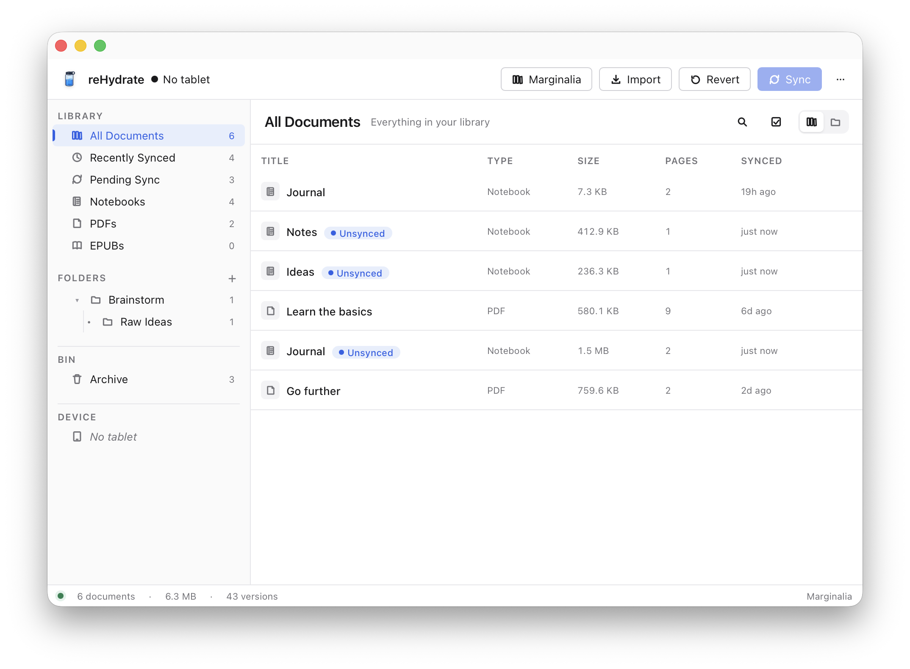
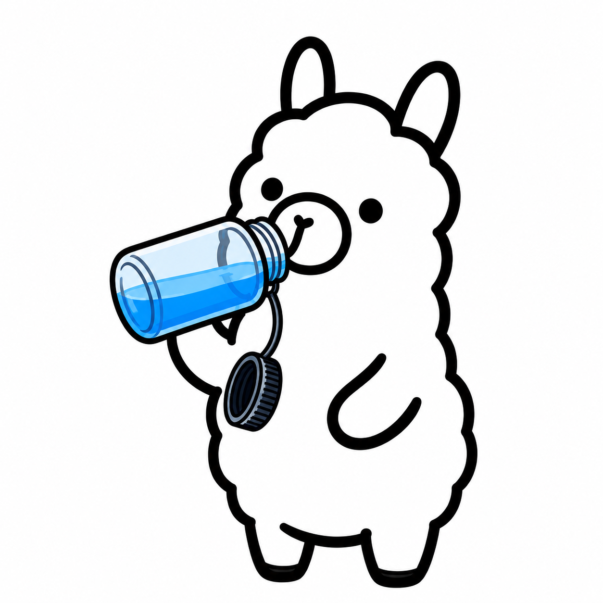

I bought a reMarkable because I wanted a paper-like place to put
my thoughts. What I didn't want was the trade-off I got handed
to retrieve them.
Either pay a monthly subscription and let my most private notes
live on someone else's servers, or make do with a web interface
that gets painfully slow once your library grows, or open a
terminal and SSH into the tablet like it's a server.
What I actually wanted was an iTunes for the reMarkable —
feature-packed, private by design, and easy enough to use without
thinking about it. That's what reHydrate is.
A library that belongs to you.
Search across every notebook. Organise them into folders. Open
any document as a sharp PDF — pens, fineliners, markers, and
highlighters all rendered crisply, ready to print or share.
Every sync keeps a snapshot. Decided you preferred last week's
draft? Open the history view and restore it.

Think with your hand. Publish anywhere.
Most of us create on a glowing screen now — straight into a
browser tab, with notifications buzzing in the corner and the
next link a click away. The thought you almost had gets buried
before you finish it.
Writing by hand is the opposite. Ink on a page. Nothing to
switch to. No autocomplete second-guessing the sentence you
started. It's a different — and quieter — way of thinking, and
the ideas that come out of it tend to be the ones worth keeping.
reHydrate carries those ideas the rest of the way:

Sync your notebook. Right-click any page and let a local
Ollama model turn your
handwriting into Markdown. From the same window, publish
a draft straight to your WordPress or
Ghost site.
Ollama runs on your computer, not in a cloud
somewhere. Pick the model that fits your hardware — a 4B
model fits comfortably on 8 GB of RAM; bigger models do
better on cursive and equations. Your pages never leave the
network you're sitting on.
Idea → ink → transcript → draft. The whole
creative loop, on your machine until you decide to ship it.